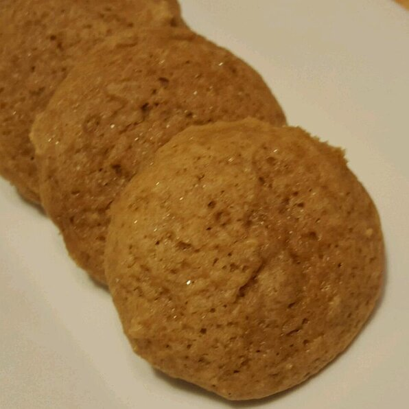

Grandma's Sugar Cookies

Description
This recipe dates back 100 years in my family and passed down to me from my grandmother, Delilah.
Ingridients
- 1 cup packed brown sugar
- 1 cup white sugar
- 4 eggs, beaten
- 1 cup shortening
- 5 cups all-purpose flour
- 1 tablespoon baking powder
- 1 teaspoon baking soda
- 2 teaspoons ground cinnamon
- 1 teaspoon ground nutmeg
- 1 cup buttermilk
- 1/2 cup colored sugar for decoration
Steps
- Preheat oven to 350 degrees F (175 degrees C).
- In a large bowl, cream the brown sugar, white sugar, eggs, and the shortening. Sift together the flour, baking powder, baking soda, cinnamon, and nutmeg. Alternate adding the buttermilk with the dry ingredients.
- Roll dough into walnut sized balls and roll the balls in colored sugar if desired. Place them 2 inches apart on an unprepared cookie sheet. Bake for 10 to 13 minutes in the preheated oven. Remove to cool on wire racks.